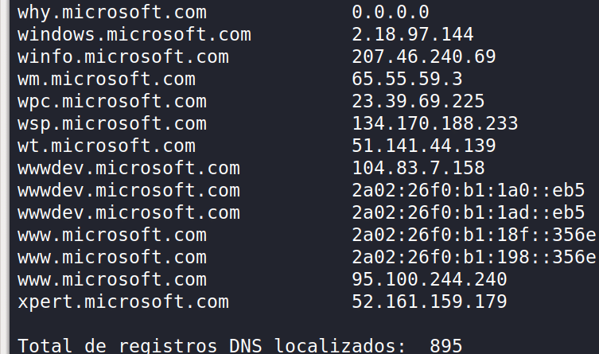
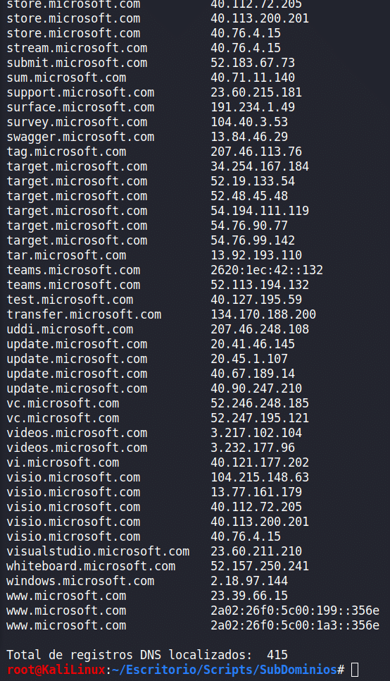
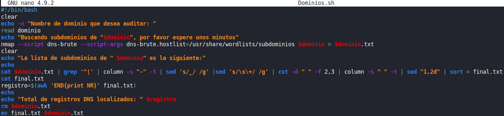
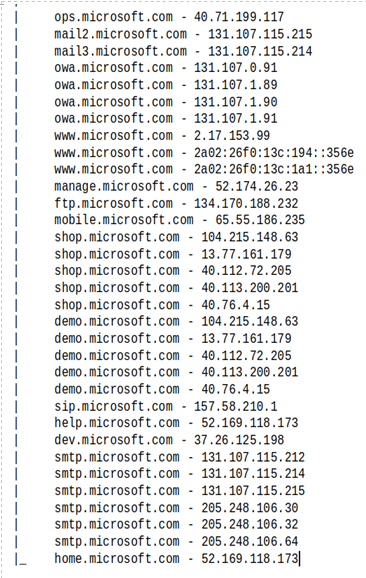
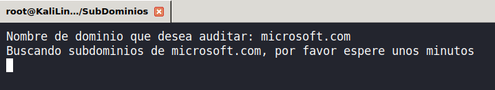

Cuando hablamos de NMAP lo primero que se nos viene a la cabeza es análisis de puertos. Sin embargo, NMAP nos brinda un conjunto de oportunidades ilimitadas: junto con MetaSploit, posiblemente sea el mejor framework para hackers y pentesters. Más allá del análisis de puertos, NMAP cuenta con cientos de scripts NSE (Nmap Scripting Engine) programados en LUA por la comunidad.








Caso práctico: dns-brute para encontrar subdominios
En este artículo usamos el script dns-brute, que permite obtener los subdominios de un dominio objetivo — un básico en cualquier auditoría de caja negra:
nmap --script dns-brute microsoft.com
Con el script por defecto se obtuvieron 58 registros DNS de Microsoft, un resultado limitado. Para mejorar esto, se puede usar un diccionario propio:
nmap --script dns-brute --script-args dns-brute.hostlist=/usr/share/wordlists/subdominios microsoft.comCon un diccionario de ~2500 palabras y conexión 3G el resultado tardó aproximadamente 1 minuto, obteniendo 415 registros frente a los 58 iniciales.


Procesado de resultados con bash
Crear un script de bash para depurar, ordenar y contar los resultados permite trabajar con la información de forma más eficiente. También se puede extraer solo las IPs únicas con:

cat microsoft.com.txt | sed 's/\s+/_/g' | cut -d '_' -f 2 | sort | uniq
Expansión iterativa del diccionario
Los certificados SSL de los servidores descubiertos revelan nuevos subdominios que se pueden añadir al diccionario, mejorando progresivamente los resultados en futuras auditorías. Con un diccionario maduro puede llegarse a casi 900 registros para el mismo objetivo.
Conclusión
El objetivo de este artículo es dar una visión de las capacidades de adaptación de los scripts NSE de NMAP. Cada script es un punto de partida que el auditor puede personalizar para maximizar sus resultados. Este mismo enfoque es replicable en decenas de scripts que usan diccionarios: enumeración de usuarios, fuzzers, etc.